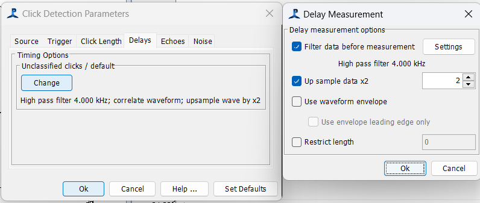
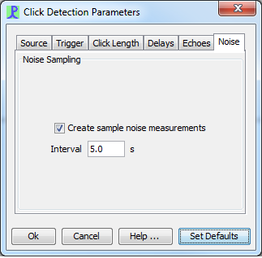

The click detector is used to detect transient signals, primarily from odontocete species such as sperm whales, beaked whales and harbour porpoises.
From the File>Add modules>Detectors menu, or from the pop-up menu on the data model display, select 'Click Detector'. Enter a descriptive name for the new detector (e.g. sperm whale detector, beaked whale detector, etc) and press Ok.
Go to Click Detection>Detection Parameters to configure the click detector.
The click detector requires a source of raw data before it can operate. This may come directly from a Sound Acquisition module (e.g. a sound card or a National Instruments board) or from processed data such as the output from a Decimator or Filter.
Select an appropriate input source from the drop down list on the click detector Detection Parameters menu,
Use the channel grouping controls to arrange the data channels into groups.
Channels in the same group are analysed together so that if one channel in a group is triggered, all channels in that group are read-out together to create a detected click.
The click detector works best if data are analysed in pairs of channels. It can then use the time delay within each pair to calculate a bearing. If multiple pairs of hydrophones are used, these bearings can be crossed to estimate source locations.
(Click detector output .clk files can also be further analysed with RainbowClick software if the channels are arranged in pairs).
If you only have a pair of hydrophones, then select either 'One group' or 'User groups' and set the group numbers to be the same.
If you have multiple pairs of hydrophones, select 'User groups' and arrange the group numbers so that each group contains two channels as shown above.
If you select 'no grouping' each channel will be analysed totally independently. There are currently no PAMGuard functions which can re-group these single channel clicks for source localisation.
The data flow through the click detector is shown below

The filters and trigger decision parameters can all be adjusted by the user to be optimal for a particular species; and for the background noise conditions from a particular vessel and operating area. Setting many of these parameters is an expert procedure and requires both experience and a thorough understanding of the types of sound being detected.
You will see in the figure above that two filters are used; a digital prefilter and a digital trigger filter. Two filters are required for the following reason. For optimal detection efficiency, the trigger only receives data in the frequency band in which the animal is making sound. However, classifiers that assign clicks to a particular species will require data from more parts of the spectrum. For instance, when detecting harbour porpoises which produce narrow band clicks between 100 and 150kHz, the trigger filter is set to a band pass filter covering only that frequency range. The pre-filter however is set to a high pass filter at 20kHz. The clip data therefore contains data in the spectrum between 20kHz and 250kHz, which is used by the classifier to distinguish between narrow band porpoise clicks and broad band clicks from other sources.
Both filters can be configured. Go to Click Detection>Digital pre Filter... or Digital trigger filter... respectively. Both filters configured using the Filter Design panel.
The trigger automatically makes a measure of background noise and then compares the signal level to the noise level. When the signal level reaches a certain threshold above the noise level a click clip is started. When the signal level falls to below the threshold for more than a set number of bins, the click clip ends and the clip is sent to the localisation and classification modules.
Trigger parameters are set in the Triggers tab of the Click Detection>Detection Parameters menu:
Individual channels can be 'turned off' in the trigger by un-checking the appropriate check boxes. Note however, that if a deactivated channel is part of a group, that channel will still be read if another channel in that group triggers. This feature can be used to reduce false triggers if one channel develops a noise problem.
The noise level N at sample i is measured using

and the signal level S is measured using

where αN is either the long filter parameter when no click is active (i.e. the signal is below threshold) or the Long Filter 2 parameter when the signal is above threshold. αS is the Short filter parameter. A click is started / stopped when the ratio S/N goes above / below the Threshold parameter.
The click only ends when all chosen channels have been below threshold for the number of samples specified by "Min Click Separation" .
The maximum length of a click is set such that click clips are limited to a maximum number of samples.
When a clip is created, a number of extra samples are added to the clip before the first and last samples to rise above threshold and after the last sample to be above threshold (pre sample and post sample in the dialog).
TEXT

TEXT

TEXT
